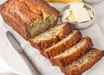

Odin's Delicious Banana Bread

Description
Odin's spicy mouth-watering banana bread will have you dreaming of Valhalla
Ingredients
- 2 cups all-pupose flour
- 3/4 cup brown sugar
- 1 1/2 teaspoon baking soda
- 2 teaspoon cinnamon
- 1 teaspoon cardamom
- 1 teaspoon vanilla extract
- 1/2 teaspoon ginger
- 2 eggs
- 1/2 cup softened butter
- 5 medium/large mashed bananas
Steps
- Preheat oven to 350 degrees Fahrenheit, and prepare a bread
pan with grease
- Combine flour, sugar, soda, and spices using a stand mixer.
Mix on slow speed for 4 minutes or until thoroughly combined.
- Leave the mixer running, slowly add in butter, eggs, vanilla,
and mashed banana, in this order.
- Pour batter into prepared pan, batter should be thick
- Place oven rack on lower third of oven, and set bread pan close
to the back of the rack.
- Bake for 60-65 minutes or until knife inserted into
loaf center is removed clean